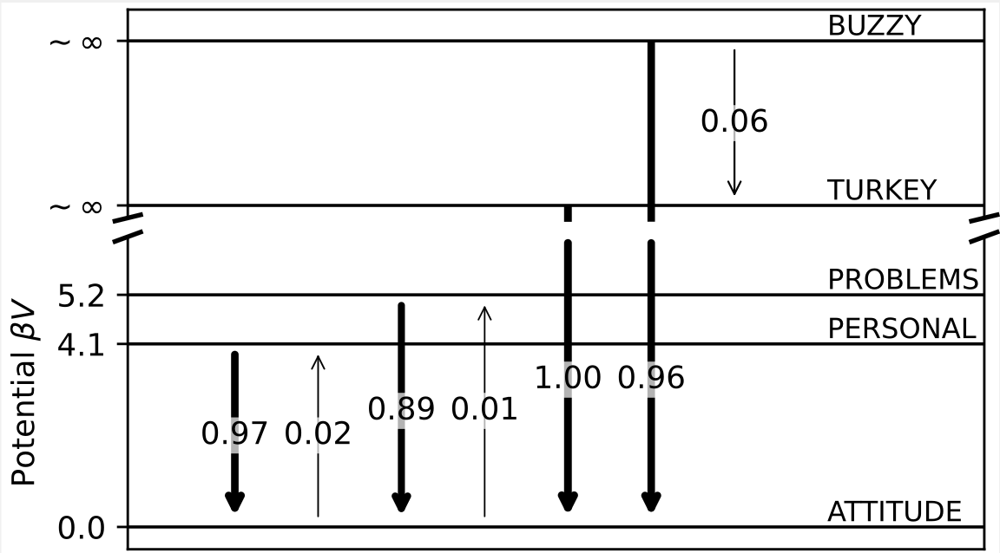

研究神经网络的势能分布一般从损失函数的哈密顿量出发，然而损失函数一般是局域的分布，很难解释深度情况的。本文作者提供了一种全新的解析视角，通过对数据采样，依靠样本间的流动构造伪势能解释样本流动的原因。
Reference: * Detailed balance in large language model-driven agents * code * data
之前和作者聊过，提出该工作的动机是因为其之前的LLM+符号回归的工作，核心思路是将之前遗传算法等算子切换为LLM，从中发现LLM似乎重视提出几个相似的算子。由此提出了势能的想法。这是一篇很有意思的工作，从唯相的角度研究势能分布。在细致阅读前有这样几个问题： 1. 为什么是细致平衡？众所周知，细致平衡不是平衡态的必要条件。 2. 具体的实现细节我还没有想到，是如何从状态转移提取势能。 3. 大模型返回的样本，是否会收到提示词的影响？即提示词是否会改变势能的形状？ 4. 这种转移背后对应的物理含义是什么？势能表示的是什么势能？
Theory
给模型一串输入让模型按照设定的约束给出输出，这样的一个过程认为是从一个采样点跳跃到另一个采样点𝒯(g ← f) = P(g|f)。上图是根据约束的样本空间表面，从一个点到另一个点认为是一个跳跃。
这个约束是将26个字母进行标号，要求给出的词和为100。具体的prompt为：
1
2
3
4
5
6
7
8prefix = "If the 26 English letters A B C D E F G H I J K L M N O P Q R S T U V W X Y Z correspond to the numbers 1 2 3 4 5 6 7 8 9 10 11 12 13 14 15 16 17 18 19 20 21 22 23 24 25 26 respectively, then ~ Knowledge K + N + O + W + L + E + D + G + E = 11 + 14 + 15 + 23 + 12 + 5 + 4 +7 +5 = 96% Workhard W + O + R + K + H + A + R + D = 23 + 15 + 18 + 11 + 8 + 1 +18 + 4 = 98% This means that knowledge and hard work can contribute up to 96% and 98% to our lives. Is it Luck? L + U + C+ K = 12 + 21 + 3 + 11 = 47% Is it Love? L + O+ V + E = 12 +15+ 22 + 5 = 54% It seems that these things we usually consider important do not play the most crucial role. So, what can determine our life at 100%? Is it Money? M + O + N + E + Y = 13 +15 +14 + 5 + 25 = 72% It seems not."
prompt = (
f"{prefix}"
f"An example word is {words}, whose letters add up to 100%. "
"Please give me a new word whose letters add up to 100%. "
"Only provide the word without any additional explanation."
)
作者假设采样空间是平衡态，采用了较强的平衡假设——细致平衡条件，从f → g以及g → f之间应当满足P(g|f) = P(f｜g)。
假设这样的跳转，类似于运动的变化，运动能量来源于某种势能“V”（动力学过程中的Lyapunov function），定义这种驱动项为K (V(f) − V(g))。其中K是非凸函数，本文采用K(x) = exp (−βx/2)。从而定义作用量S为：
$$\begin{align} \mathcal{S} = \int_{f\in \mathcal{C}}\int_{g\in \mathcal{C}} \mathcal{T}(g\gets f)\, K\!\left(V(f)-V(g)\right)\, Df\, Dg \end{align}$$
通过对作用量变分δ𝒮 = 0得到： $$\begin{align} \int_{g \in \mathcal{C}} \mathcal{T}(g\gets f)\, K'\!\left(V_{\mathcal{T}}(f)-V_{\mathcal{T}}(g)\right)\, Dg\nonumber - \int_{h \in \mathcal{C}} \mathcal{T}(f\gets h)\, K'\!\left(V_{\mathcal{T}}(h)-V_{\mathcal{T}}(f)\right)\, Dh = 0 \end{align}$$
接下来通过训练，给每一个状态标出一个标量，最小化变分量，从而使其满足细致平衡条件。
Experiments

上图给出了不同结果之间的距离，以及跳到标量最低的值。